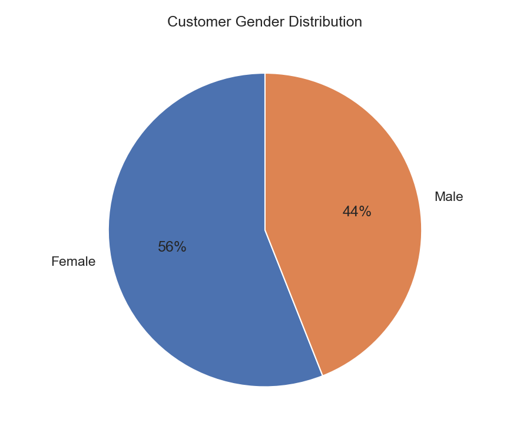
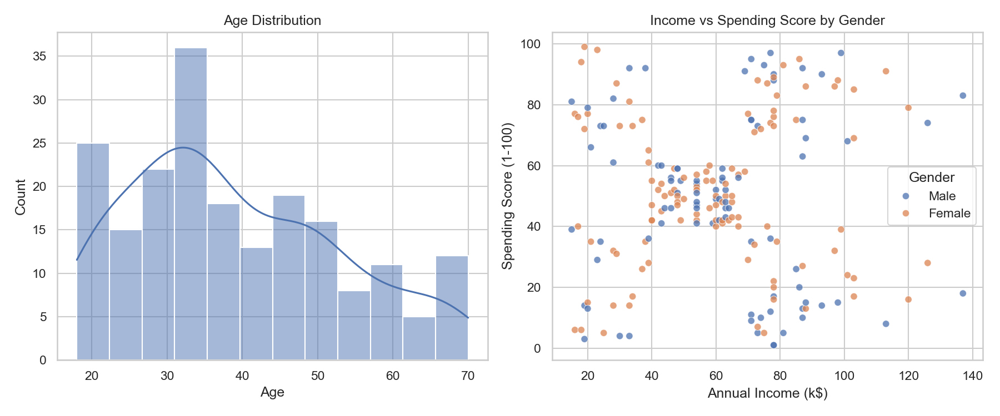
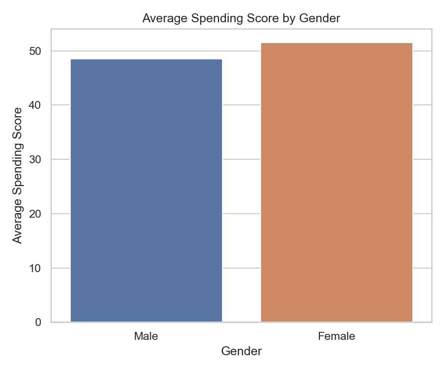
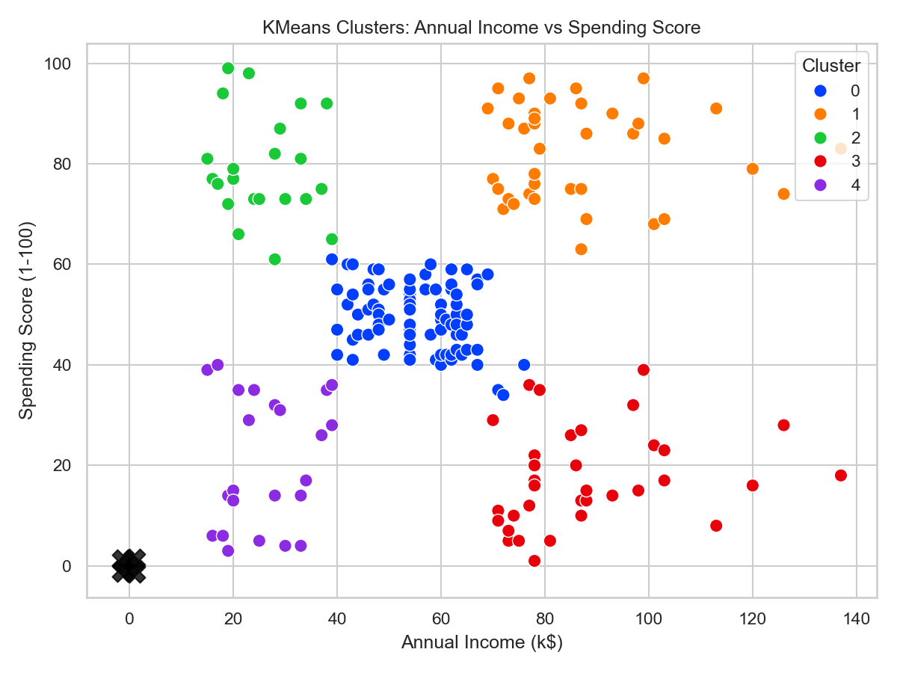

Using KMeans clustering to identify target customer groups for marketing strategy and customer segmentation.
This analysis groups customers based on annual income and spending score. The final goal is to identify target customer segments that marketing can approach with tailored offers.
| Cluster | Customers | Avg Age | Avg Income (k$) | Avg Spending |
|---|---|---|---|---|
| 0 | 81 | 42.7 | 55.3 | 49.5 |
| 1 | 39 | 32.7 | 86.5 | 82.1 |
| 2 | 22 | 25.3 | 25.7 | 79.4 |
| 3 | 35 | 41.1 | 88.2 | 17.1 |
| 4 | 23 | 45.2 | 26.3 | 20.9 |




Although the dataset does not contain visit frequency or festival attendance, the clustering result helps the marketing team allocate investment across customer groups and design discount campaigns.